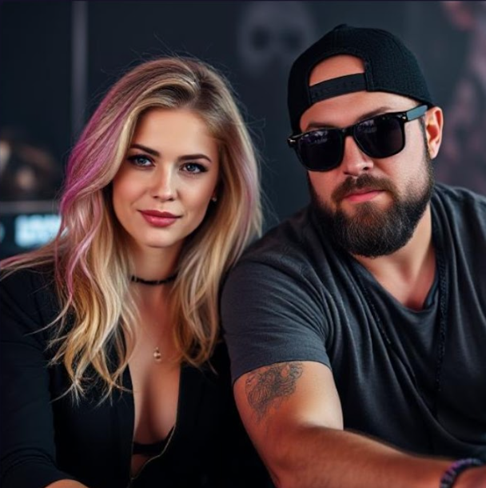

DJ LyraBee / Mystic Duke
DJ LyraBee is a bright up-and-coming multi-talent. As a writer, musician and co-producer, she stamps every track with her playful and energetic personality.
As his name suggests Mystic Duke is a bit...mysterious. Never seen without his signature dark shades, his quiet soul is betrayed by his soaring guitar solos and sizzling drum tracks.
Whether they're writing, tracking or mixing, LyraBee and Duke bring a contagious synergy to their productions.
Duke: "Working with Bee is such a joy. I'm a little rough around the edges at times and she knows exactly how to sand off my rough spots. She's such a clever keyboardist. She instictively knows when to and, more importantly, when NOT to play. She has a real gift."
LyraBee: "Working with Duke is always a "Mystic" experience. He's a bit on the quiet side. That's because his brain is always at work on a new hook or transforming a stale line into a razor sharp phrase. I focus primarily on lyrics, but Duke is more drawn to how words sound when they're sung.
We really balance each other with our personal creative strengths."